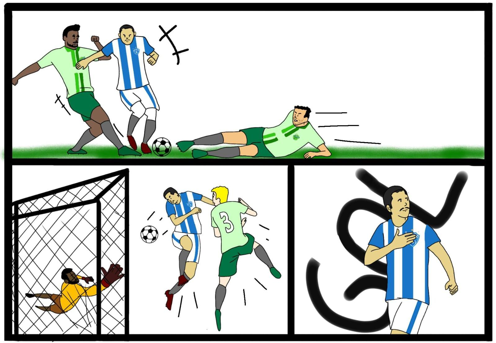
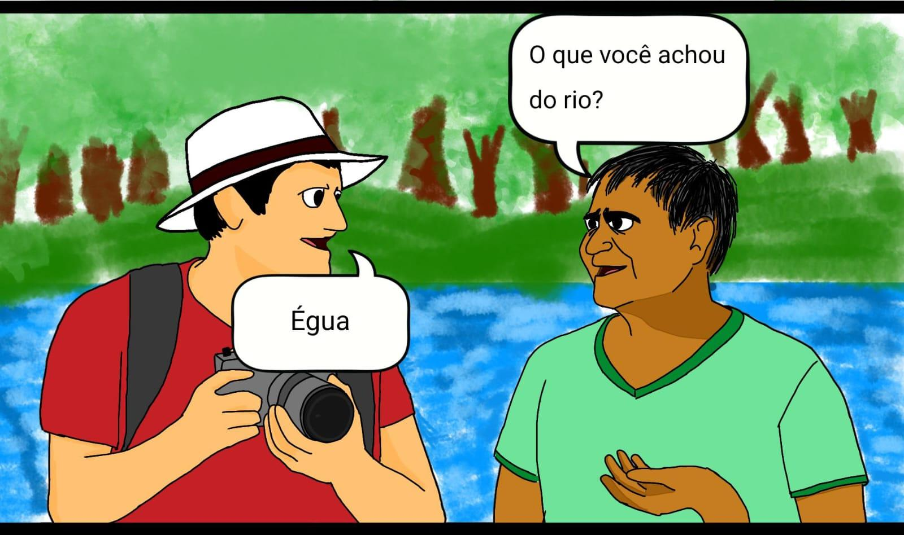

Tirinha 1
Data: 22/05/2026

Fonte: Thomás da Silva Marques Pereira
Autoridades ambientais destacam que, apesar do cenário positivo, o monitoramento continuará sendo realizado de forma constante, já que eventos climáticos extremos ainda preocupam toda a região amazônica.
Tirinha 1

Fonte: Thomás da Silva Marques Pereira
Autoridades ambientais destacam que, apesar do cenário positivo, o monitoramento continuará sendo realizado de forma constante, já que eventos climáticos extremos ainda preocupam toda a região amazônica.
Podcast da Semana
Texto do podcast aqui
Últimas Notícias